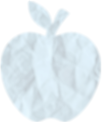

Today
Today, much of my focus revolves around learning how to live healthily, understanding nutrition, and cooking meals that are both nourishing and enjoyable. Exploring how different habits and foods affect the body has become an important part of my everyday life.
Health and Longevity
Strangely, this interest emerged from my fear of death, a fear I share with many people. This fear motivated me to take care of my health and strive for longevity. The more I’ve learned about the topic, the more I’ve realized how much there is I did not know about. There are endless things to learn about! Gut microbiome, processed foods, interval training, protein intake and endocrine disruptors are only a few of the topics I’ve learned about.
Cooking
Nutrition is a very big part of health and longevity. I love to eat delicious food, but I also need to nourish my body properly. This means learning how to cook healthy dishes that taste great. Cooking and preparing things right can also make ingredients even healthier by changing their composition or making their nutrients more available. Furthermore, different combinations of ingredients can boost each other, unlocking even more potential! I do strive for optimizing my cooking but I try not to make things too complicated.